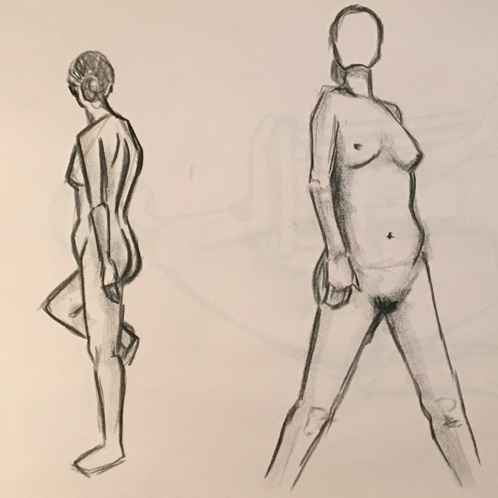

INKS
The tiny body builder. Her body is a work of art that tells the story of her life and passions. She practices perfection in her postures while showing her discipline and strength in sculpting her body.

CHRISTOPHER
A theatre junkie who loves dressing up and playing characters. He enjoys Shakespeare and loves to dress up on weekends. His gestures are dramatic and displays his character's emotions.

FAYE
The lone female architect. She works in a world when men dominate each corner. After many years and long nights, she has climbed to the top of the ladder where she is well respected. Her frail body bears the work she has put in through the years.

MEL
The waitress, aspiring actress, spends the day seeking auditions and nights working at the local brewery. She likes meeting new people but doesn't need new friends. Her poses are strong yet guarded.

JUDY
The fourth grade literature teacher reminisces about her past life as a ballerina often. Her extreme awareness of her body shows that she still practices on the weekends.
Gerald
The retired hair dresser lost all his hair, so he grew a beard. He worked 52 years in his little shop in the Castro. Now he lives with his partner and cat, Herb. He feels tired and old, but still a child at heart.


{kind=link}
{kind=link}
{kind=link}